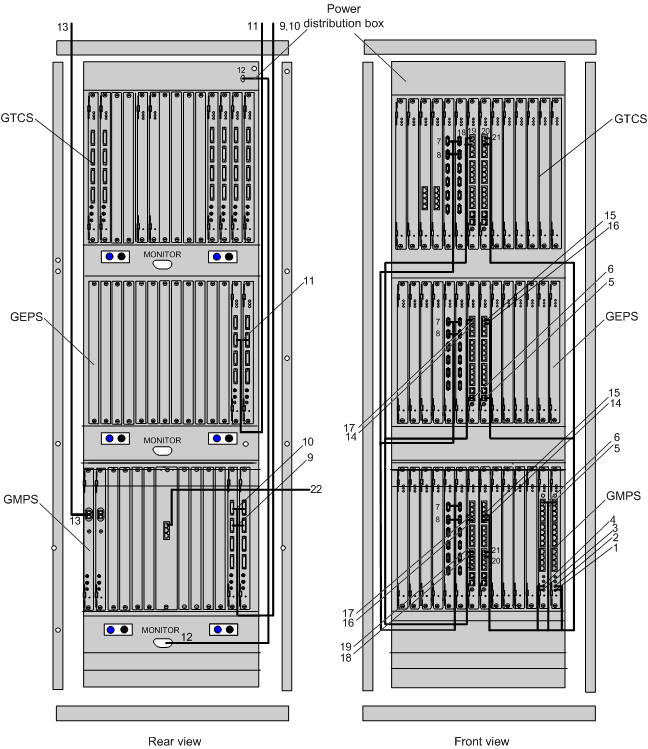

The signal cables in the GBCR consist of the active/standby 75-ohm coaxial cable, active/standby 120-ohm twisted pair cable, optical cable, straight-through cable, inter-GTNU cable, BITS clock cable, Y-shaped clock cable, and PDB monitoring signal cable.
Figure 1 shows the connections of the signal cables in the GBCR.

- Figure 1 takes the configuration of one GMPS, one GEPS, and one GTCS as an example.
- The types of interface boards, installation positions of cables, and number of cables shown in Figure 1 are examples. The actual types of interface boards, installation positions of cables, and number of cables depend on the site plan.
Table 1 describes the connections of the signal cables in the GBCR.
SN |
Description |
Connector Type/Installation Position 1 |
Connector Type/Installation Position 2 |
Remarks |
|---|---|---|---|---|
1 |
75-ohm coaxial clock cable (or 120-ohm clock conversion cable) connecting the GGCU to the BITS clock port |
SMB male connector/CLKIN1 port on the GGCU that is installed in slot 13 of the GMPS |
Connector attached to the BITS clock/BITS clock port |
Figure 1 shows the clock cables that are connected to the CLKIN1 and CLKIN0 ports. Generally, only one port is used to connect to the BITS clock. |
2 |
75-ohm coaxial clock cable (or 120-ohm clock conversion cable) connecting the GGCU to the BITS clock port |
SMB male connector/CLKIN0 port on the GGCU that is installed in slot 13 of the GMPS |
Connector attached to the BITS clock/BITS clock port |
|
3 |
75-ohm coaxial clock cable (or 120-ohm clock conversion cable) connecting the GGCU to the BITS clock port |
SMB male connector/CLKIN1 port on the GGCU that is installed in slot 12 of the GMPS |
Connector attached to the BITS clock/BITS clock port |
|
4 |
75-ohm coaxial clock cable (or 120-ohm clock conversion cable) connecting the GGCU to the BITS clock port |
SMB male connector/CLKIN0 port on the GGCU that is installed in slot 12 of the GMPS |
Connector attached to the BITS clock/BITS clock port |
|
5 |
Y-shaped clock cable connecting the GGCU to the GSCU |
RJ45/CLKOUT port on the GGCU that is installed in slot 12 or 13 of the GMPS |
RJ45/CLKIN port on the GSCU that is installed in slot 6 of the GEPS |
- |
6 |
Y-shaped clock cable connecting the GGCU to the GSCU |
RJ45/CLKOUT port on the GGCU that is installed in slot 12 or 13 of the GMPS |
RJ45/CLKIN port on the GSCU that is installed in slot 7 of the GEPS |
|
7 |
Inter-GTNU cable |
DB14/TDM port on the GTNU that is installed in slot 4 or 5 of the GMPS |
DB14/TDM port on the GTNU that is installed in slot 4 or 5 of the GEPS |
- |
8 |
Inter-GTNU cable |
DB14/TDM port on the GTNU that is installed in slot 4 or 5 of the GMPS |
DB14/TDM port on the GTNU that is installed in slot 4 or 5 of the GEPS |
|
9 |
E1/T1 cable connecting the EIUa/PEUa to the DDF or other NEs |
DB44/E1/T1 port on the EIUa/PEUa that is installed in slot 14 of the GEPS |
DDF or other NEs |
- |
10 |
E1/T1 cable connecting the EIUa/PEUa to the DDF or other NEs |
DB44/E1/T1 port on the EIUa/PEUa that is installed in slot 15 of the GEPS |
DDF or other NEs |
|
11 |
E1/T1 cable connecting the EIUa/PEUa to the DDF or other NEs |
DB44/E1/T1 port on the EIUa/PEUa that is installed in slot 14 or 15 of the GEPS |
DDF or other NEs |
- |
12 |
PDB monitoring signal cable |
DB15/port connecting the PDB to a service subrack |
DB15/MONITOR port on the lowest subrack |
- |
13 |
Optical cable |
LC optical port/slot 27 of the GEPS |
OIUa in the GTCS, or ODF, or other NEs |
- |
14 |
Inter-GSCU Ethernet cable |
RJ45/10/100/1000BASE-T port on the GSCU that is installed in slot 7 of the GMPS |
RJ45/10/100/1000BASE-T port on the GSCU that is installed in slot 6 of the GEPS |
- |
15 |
Inter-GSCU Ethernet cable |
RJ45/10/100/1000BASE-T port on the GSCU that is installed in slot 7 of the GMPS |
RJ45/10/100/1000BASE-T port on the GSCU that is installed in slot 7 of the GEPS |
|
16 |
Inter-GSCU Ethernet cable |
RJ45/10/100/1000BASE-T port on the GSCU that is installed in slot 6 of the GMPS |
RJ45/10/100/1000BASE-T port on the GSCU that is installed in slot 7 of the GEPS |
|
17 |
Inter-GSCU Ethernet cable |
RJ45/10/100/1000BASE-T port on the GSCU that is installed in slot 6 of the GMPS |
RJ45/10/100/1000BASE-T port on the GSCU that is installed in slot 6 of the GEPS |
|
18 |
Inter-GSCU Ethernet cable |
RJ45/10/100/1000BASE-T10 port on the GSCU that is installed in slot 6 of the GMPS |
RJ45/10/100/1000BASE-T port on the GSCU that is installed in slot 6 of the GTCS |
- |
19 |
Inter-GSCU Ethernet cable |
RJ45/10/100/1000BASE-T10 port on the GSCU that is installed in slot 7 of the GMPS |
RJ45/10/100/1000BASE-T port on the GSCU that is installed in slot 6 of the GTCS |
|
20 |
Inter-GSCU Ethernet cable |
RJ45/10/100/1000BASE-T port on the GSCU that is installed in slot 7 of the GMPS |
RJ45/10/100/1000BASE-T port on the GSCU that is installed in slot 7 of the GTCS |
- |
21 |
Inter-GSCU Ethernet cable |
RJ45/10/100/1000BASE-T port on the GSCU that is installed in slot 6 of the GMPS |
RJ45/10/100/1000BASE-T port on the GSCU that is installed in slot 7 of the GTCS |
- |
22 |
Ethernet cable between the GOMU and the M2000 (LAN) |
RJ45/GOMU Ethernet port |
RJ45/Ethernet port on the M2000 (LAN) |
ETH0/ETH1 port on the GOMU, connecting to the M2000 (LAN) |